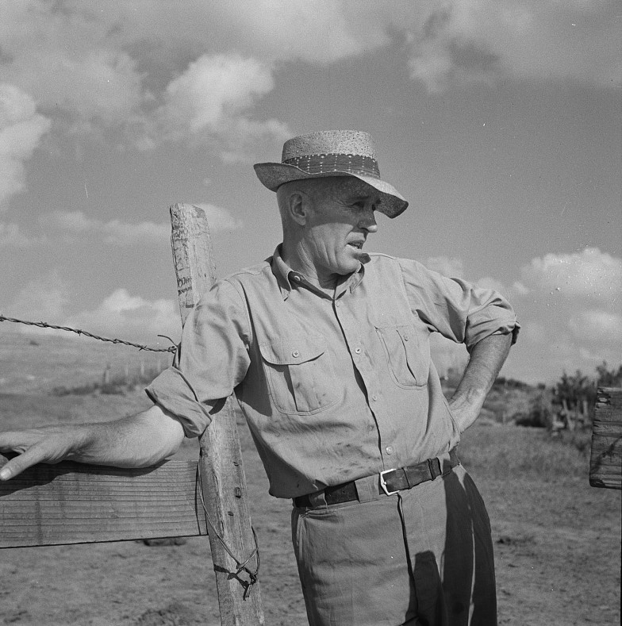

Meet Farmer George, a hardworking farmer facing a dilemma on his family farm: what is the ideal balance of hogs and cattle to maximize profitability? He is confronted with complex considerations, including factors such as market demands, labor costs, and feed costs. Luckily for Farmer George, this issue can be solved using linear programming! In this introduction, you'll delve into the fundamentals of linear programming problems, learn how to use the OptiFarm Grapher tool, and consider the diverse real-world scenarios where linear programming can play a pivotal role. Continue on to help Farmer George harness the power of mathematics in the world of farming.
{% endblock %} {% block next_button %} Next {% endblock %} {% block right_content %}  {% endblock %}